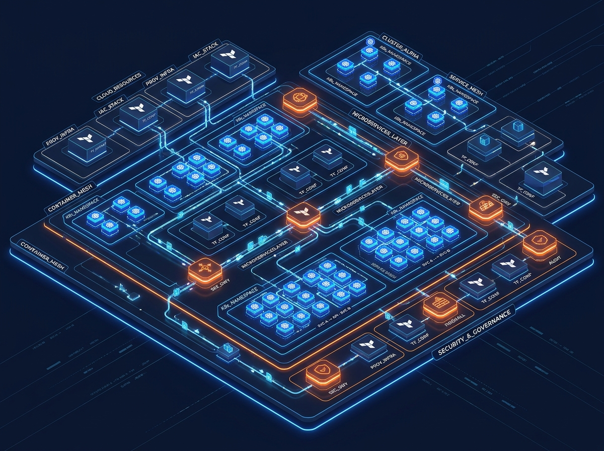

We do more than provide services; we engineer the technical foundation required for your business growth.
ZeroBytech transforms legacy technical bottlenecks into automated, zero-trust, high-throughput cloud environments. No superficial lift-and-shift. Pure engineering rigour.
Cloud Infrastructure Engineered for Velocity
We eliminate architectural debt with immutable, automated, and observable cloud platforms built to scale on demand.
Cloud Migration & Modernisation
Transition monolithic legacy architectures to resilient, multi-cloud container orchestration without a second of operational disruption. We engineer zero-downtime database replication, microservices decoupling, and automated rollback guardrails.
DevOps & GitOps Automation
Continuous delivery systems that take code from commit to production in minutes. We build GitOps pipelines that verify every change against automated security policies and integration suites.
Security & Compliance Guardrails
Shift-left security engineered directly into your runtime and IaC. We replace manual audit hurdles with immutable policy-as-code and real-time container threat detection.

Legacy to Cloud: The 4-Phase Engineering Framework
A deterministic, risk-engineered migration methodology that eliminates operational downtime and ensures total architectural clarity.
Architecture Audit
Deep-dive telemetry analysis into your legacy bottlenecks, database coupling, throughput bottlenecks, security gaps, and current cloud burn.
Migration Blueprint
Target architecture modeled in declarative IaC with network topologies, cutover dependency graphs, and zero-downtime data replication plans.
Cloud Engineering
Automated provisioning of production clusters, GitOps pipelines, container registries, secrets management, and live synchronization bridges.
Performance at Scale
Live cutover execution followed by load-testing, FinOps budget guardrails, continuous autoscaling tuning, and automated alerting handoff.
We don't patch legacy debt. We re-engineer the foundation for exponential velocity.
Most consultancies recommend expensive toolchains that leave your engineers burdened with complex maintenance. ZeroBytech designs lean, autonomous systems governed by rigorous code standards and clear business outcomes.
Zero-Downtime Data & Traffic Cutover
Maintain continuous business operations during massive database and application platform migrations.
30% to 50% Cloud Spend Reduction
Eliminate overprovisioned clusters, right-size compute workloads, and establish FinOps automated policies.
Immutable Security & Compliance Guardrails
Pass SOC 2, HIPAA, and ISO audits automatically with continuous policy-as-code verification.
Autonomous Multi-Region Resiliency
Self-healing infrastructure designed for failure that eliminates manual pager alerts and midnight outages.
Accelerate Your Cloud Transformation Today
Speak directly with our senior cloud architects. Receive a comprehensive review of your infrastructure bottlenecks, potential cost optimizations, and modern cloud blueprint.